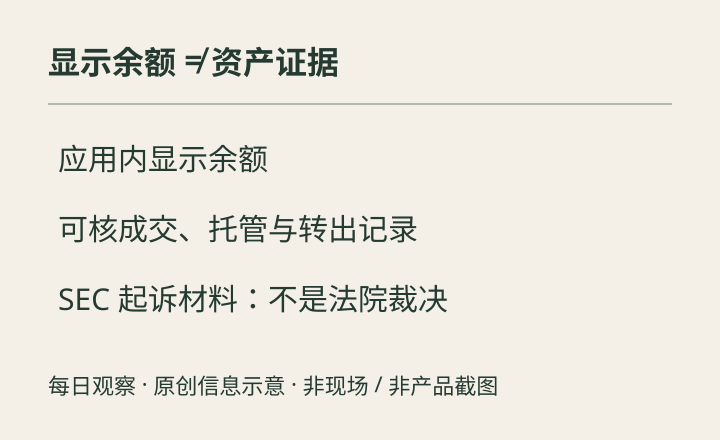
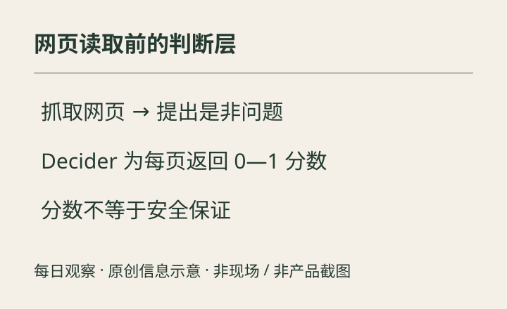

本期原创图像说明
每日观察编辑以代码绘制SVG，供本期出版使用；不含第三方照片、商标或界面截图素材。下列示意图对应文中已核事实，不代表来源方背书，不是现场或实测记录。
接入一个 MCP 工具前，先把允许的动作列出来
作者／署名：每日观察 · 原创示意图
制作及核验日期：2026-11-21

来源与日期
- modelcontextprotocol.io ↗ · 2025-06-18版规范
SEC 起诉八家实体，指称以虚假加密平台骗取资金
作者／署名：每日观察 · 原创示意图
制作及核验日期：2026-11-21

来源与日期
- www.sec.gov ↗ · 2026-11-19
- www.sec.gov ↗ · 2026-11-19
UU 远程预告12月上线会员，基础远控承诺继续免费
作者／署名：每日观察 · 原创示意图
制作及核验日期：2026-11-21

来源与日期
- uuyc.163.com ↗ · 2026-11-19（页面显示）
欧英谈妥青年体验计划，申请开放仍待后续程序
作者／署名：每日观察 · 原创示意图
制作及核验日期：2026-11-21

来源与日期
- data.consilium.europa.eu ↗ · 2026-11-20
- www.gov.uk ↗ · 更新于2026-11-20
网页交给代理前，Perplexity 新增一层判断分数
作者／署名：每日观察 · 原创示意图
制作及核验日期：2026-11-21

来源与日期
- community.perplexity.ai ↗ · 2026-11-19（论坛标示）